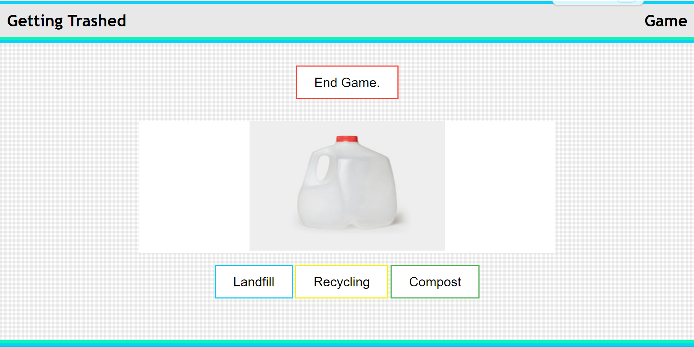
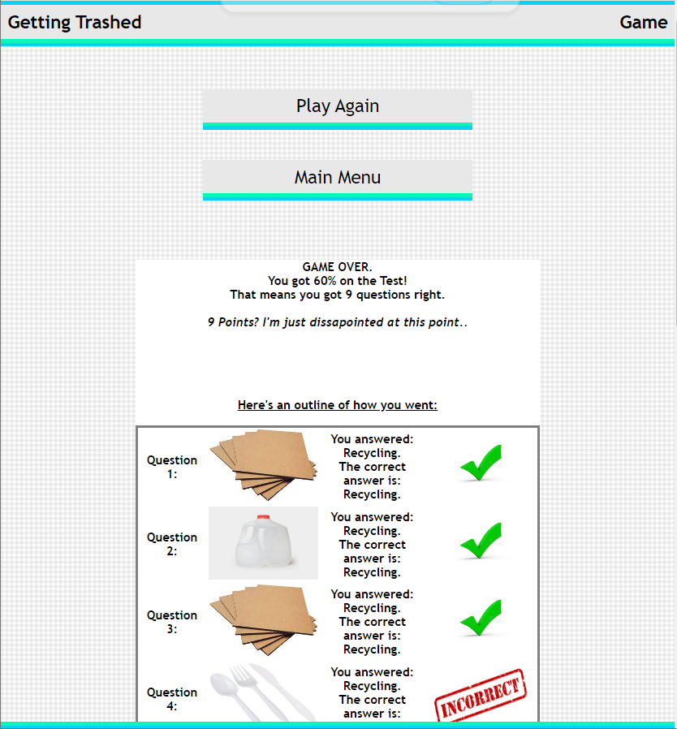
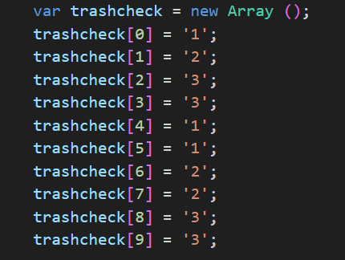

Getting Trashed was a Year 10 computer science project whose aim was to teach people what bin to put their trash into. This was done creating a website where people could complete a quiz asking them which bin to put different types of trash into.
Getting Trashed was a group project I worked on with Tyrell Carli. My task was to do the front-end design and create the quiz, whilst my collaborator worked on the back-end database and displaying data from it. Quite unfortunately his section was not completed, but a version of the website just including my sections exists.
When the game is finished, you're presented with your results including a brief message describing how well you went. I had far too much fun writing these messages.
This project was actually my first foray into using JavaScript. As such, it features a number of techniques that are perhaps best described as questionable. This includes the needless barrage of if-else statements above or, possibly worse, an astonishingly odd means of initialising an array as below.
Despite the fact that it was never properly finished, and that my code was very bad, I'm relatively happy with this particular project. It is available online here if you'd like to have a go at the quiz.